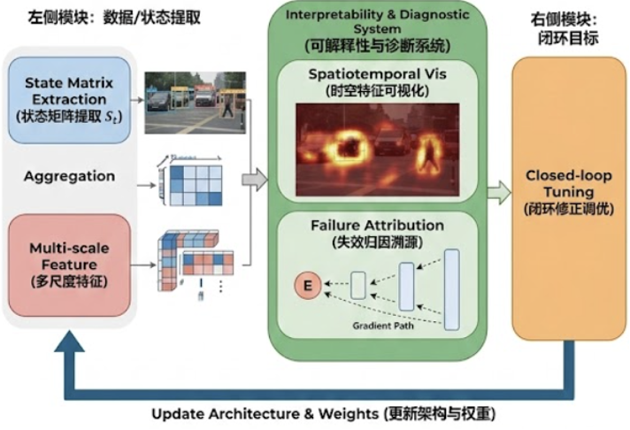
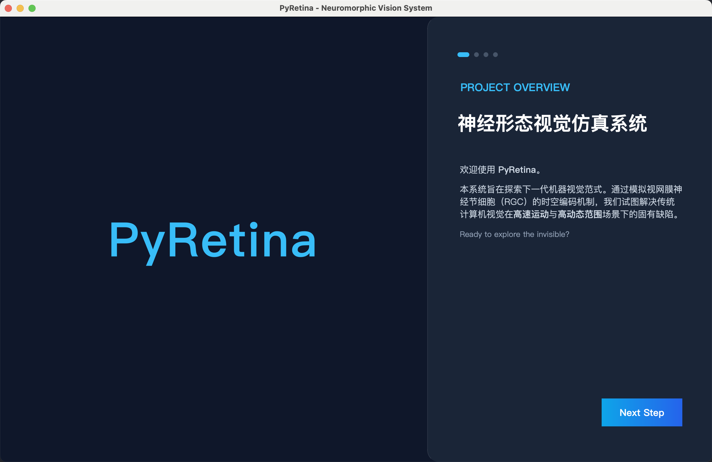
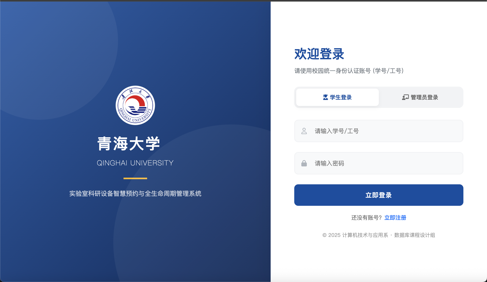
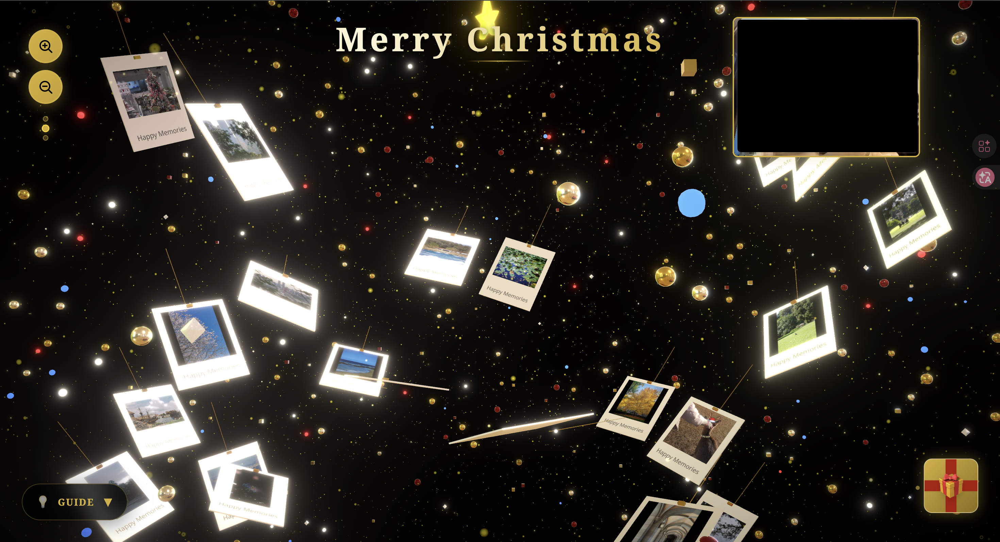
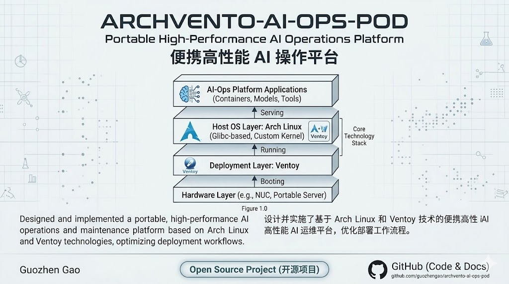
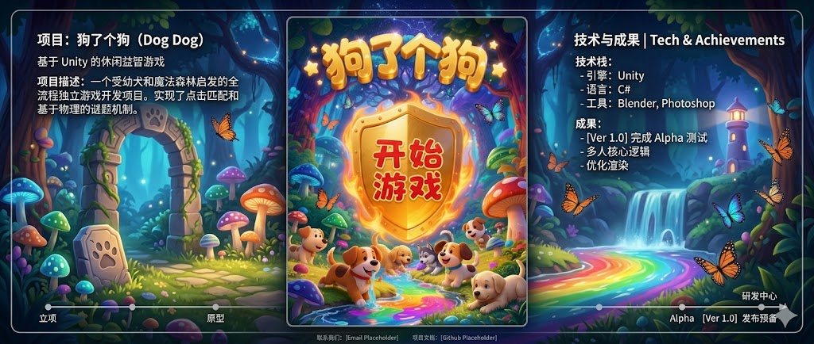

I am currently an undergraduate student in the College of Computer Science at Qinghai University, supervised by Dr. Zhengjun Du and Dr. Song Wang. I also collaborate closely with Dr. Man Yao and Dr. Hu Tianxiang from the Institute of Automation, Chinese Academy of Sciences. My research interests mainly include image processing, multimodal learning, and brain-inspired deep learning.
🔥 News
- 2026.05: 🏆 Awarded International Second Prize at the ASC26 Student Supercomputer Challenge, focusing on the inference performance optimization of the UnifoLM-WMA-0 Embodied World Model on NVIDIA A800 GPUs.
- 2026.04: 📜 Secured a Software Copyright for DeepSight, a deep learning model interpretability and diagnostic analysis system oriented towards computer vision.
- 2026.02: 🏅 Won the National Third Prize in the 2026 MCM (Problem B) with the "Archimedes Architecture" report, utilizing NSGA-II and Monte Carlo simulations.
- 2025.12: 💻 Designed and open-sourced a suite of five independent projects (including QHU i-Lab, PyRetina, and ArchVento-AI-Ops-Pod), spanning neuromorphic vision simulation to system architectures.
- 2025.10: 🥈 Awarded National Second Prize in the Contemporary Undergraduate Mathematical Contest in Modeling (CUMCM).
- 2025.09: 🥉 Awarded National Third Prize in the Baidu Astar Programming Contest.
- 2025.06: 🎮 Developed and released Dog_a_Dog, an independent game project inspired by the viral tile-matching game "Sheep a Sheep".
📝 Publications & Projects

DeepSight: A Deep Learning Model Interpretability and Diagnostic Analysis System
Guozhen Gao
Software Copyright
A diagnostic analysis system oriented towards computer vision, focusing on rendering black-box models transparent and diagnosing structural inefficiencies, serving as a core asset for academic evaluation.

PyRetina: Neuromorphic Vision Simulation and Spatiotemporal Data Analysis System
Guozhen Gao
Open Source Project
An educational and analytical simulation system for Dynamic Vision Sensors (DVS), modeling the conversion of RGB images to event-based data using brain-inspired mechanisms.

QHU-i-Lab: Smart Laboratory Appointment Platform
Guozhen Gao
Open Source Project
A full-stack smart appointment system developed for Qinghai University using Python, SQL, and HTML, designed to streamline laboratory resource allocation and management.

Merry_Christmas_Tree: Interactive Holiday Album and Virtual Gift Box
Guozhen Gao
Open Source Project
A front-end interactive web application developed with TypeScript. The project features a dynamic Christmas tree, a memorial photo album, and a virtual envelope gift box, demonstrating proficiency in modern web animations and UI design.

ArchVento-AI-Ops-Pod: Portable High-Performance AI Operations Platform
Guozhen Gao
Open Source Project
Designed and implemented a portable, high-performance AI operations and maintenance platform based on Arch Linux and Ventoy technologies, optimizing deployment workflows.

Dog_a_dog: Tile-Matching Puzzle Game
Guozhen Gao
Open Source Game Project
An independent game development project built with C++ and the EasyX graphics library, implementing complex tile-matching logic inspired by popular casual games.
🎖 Honors and Awards
- 2024 - 2025 "Good Reading" Tsinghua Fund Scholarship (Highly Selective).
- 2024 - 2025 BYD Corporate Scholarship (Recognizing outstanding comprehensive abilities).
- 2024 - 2025 Campus Talent Scholarship.
- 2024 - 2025 Outstanding Student Scholarship.
- 2024 - 2025 University-level "Five-Good" Student (Highest comprehensive honor for students).
📖 Educations
- 2024.09 - present, Undergraduate, Qinghai University.